2014.04 - 学习51单片机
技术关键词：51单片机 / C语言 / 嵌入式

第一次接触学习嵌入式51单片机，自学C语言语句点亮LED小灯。
2014.01 - 回收中性笔芯结合单片机
技术关键词：51单片机 / 回收笔芯手工 / 电子电路
项目简介：利用回收的中性笔芯手工复刻埃菲尔铁塔，然后添加LED灯光在作品上并用51单片机控制实现不同的展示效果。
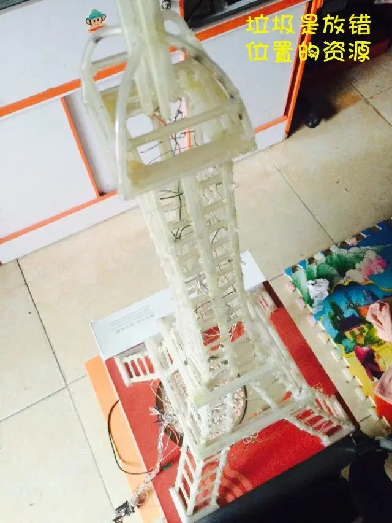👆作品整体的静态外观。
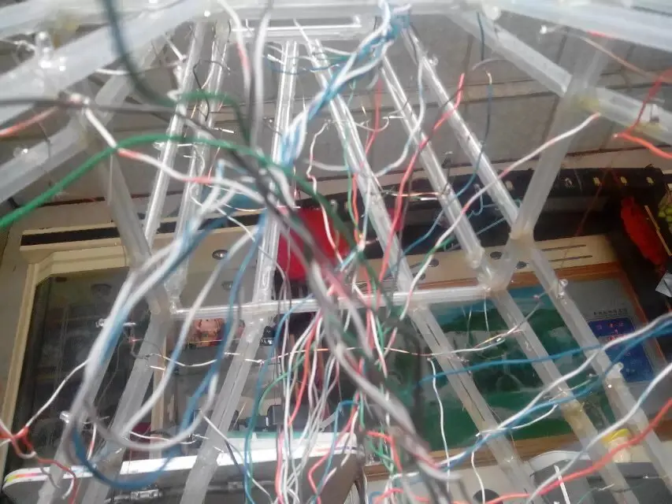👆搭建埃菲尔铁塔结构并添加LED灯珠控制电路。
👆编写C语言代码控制LED灯珠实现展示效果。
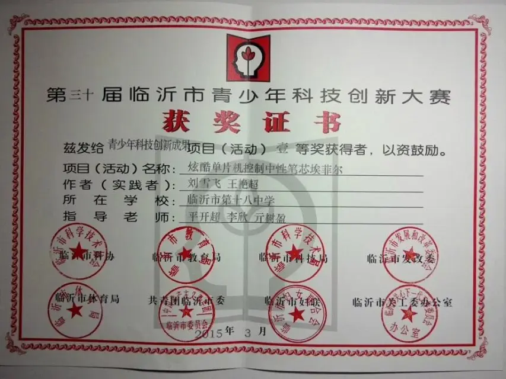👆作品参加临沂市青少年科技创新大赛获得一等奖。
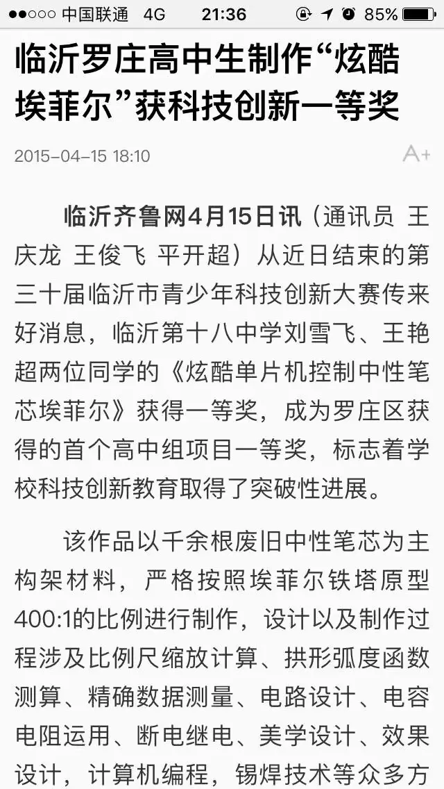👆作品参赛获奖被当地新闻媒体报道。
2015.11 - 系统学习C语言和51单片机
技术关键词：51单片机 / C语言 / 电子电路
项目简介：经过系统地学习后手动焊接尝试用51单片机控制点阵LED显示复杂的内容。
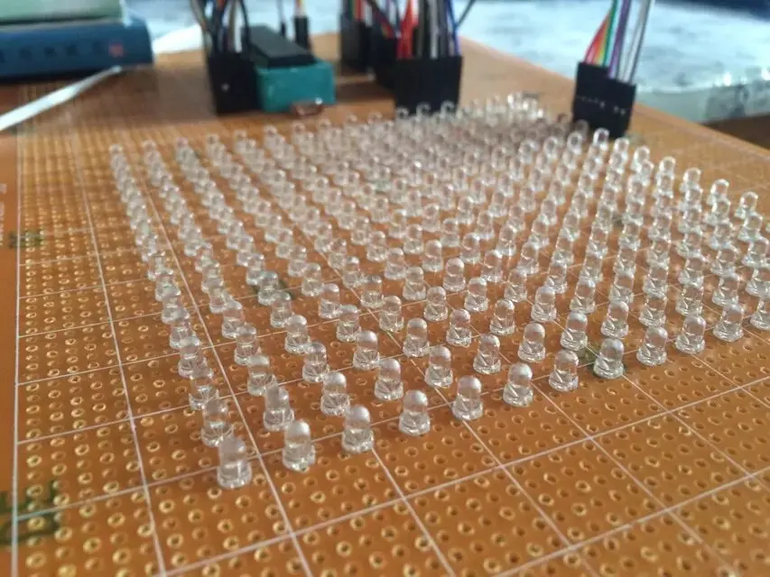👆手工焊接出来的LED点阵。
2016.04 - 实现PCB电路板的设计和焊接
技术关键词：51单片机 / PCB设计 / 电子电路
项目简介：经过学习以后自己尝试设计PCB电路板搭载51单片机控制LED点阵。
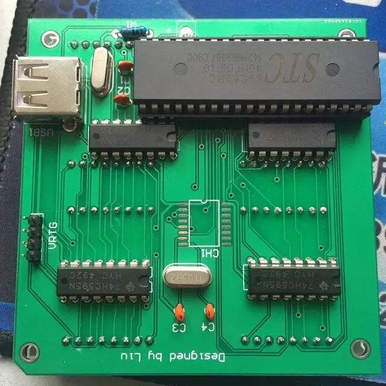👆生产出来并焊接完成的PCB电路板。
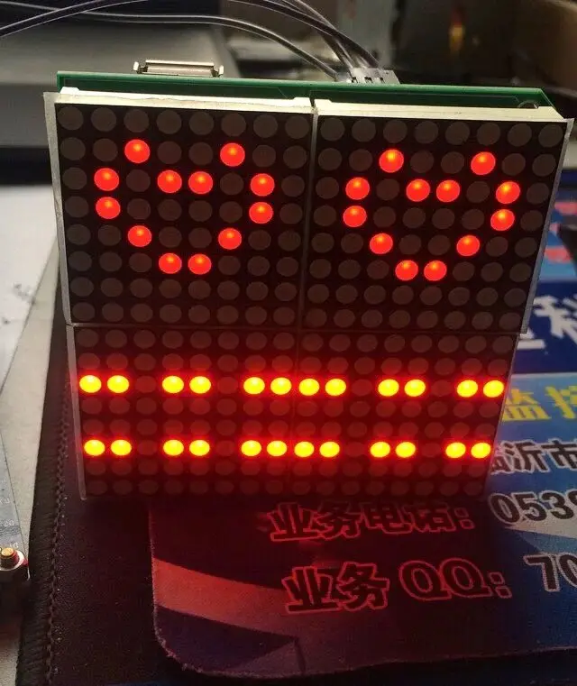👆51单片机编程控制显示特定的图案。
2016.05 - 实现51单片机驱动步进电机并与安卓APP通信
技术关键词：51单片机 / 步进电机驱动 / APP开发
项目简介：利用51单片机驱动步进电机来实现机械臂的动作，并用JAVA开发最简单的Android APP遥控器控制每个步进电机的角度信息。
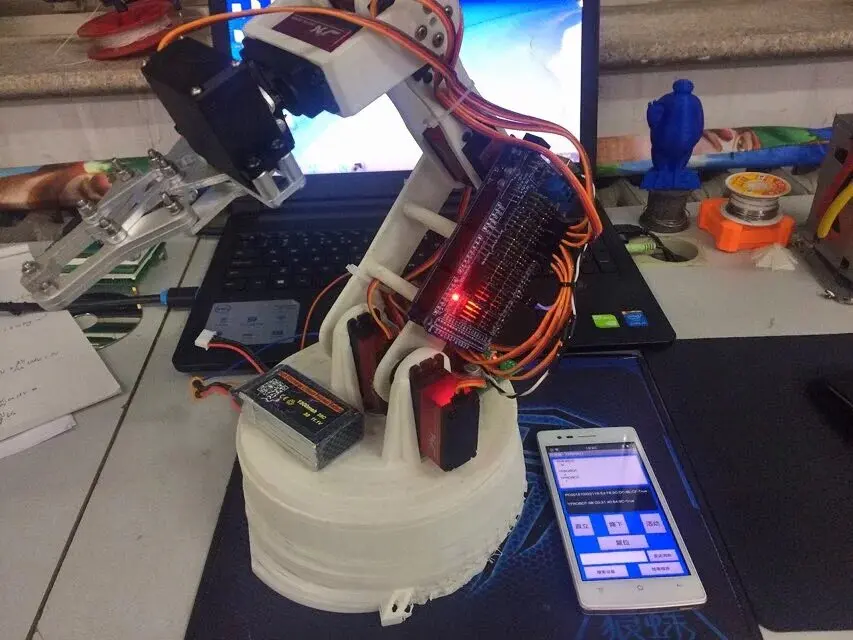👆生产出来并焊接完成的PCB电路板。
2016.06 - 实现模拟电路的无线麦克风
技术关键词：模拟电路 / 电磁场与电磁波 / 麦克风
项目简介：搭建最简单的无线电麦克风模拟电路，让无线耳机调整到匹配的频率后实现收听。
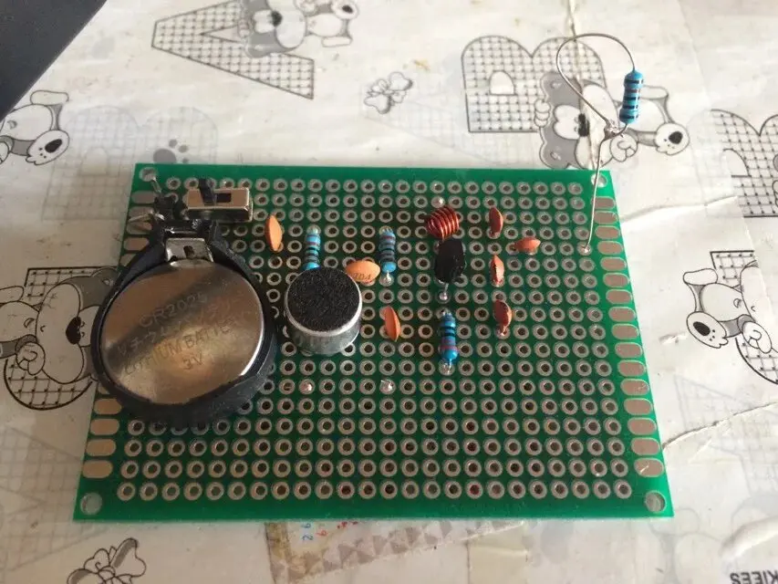👆焊接完成的模拟电路板。
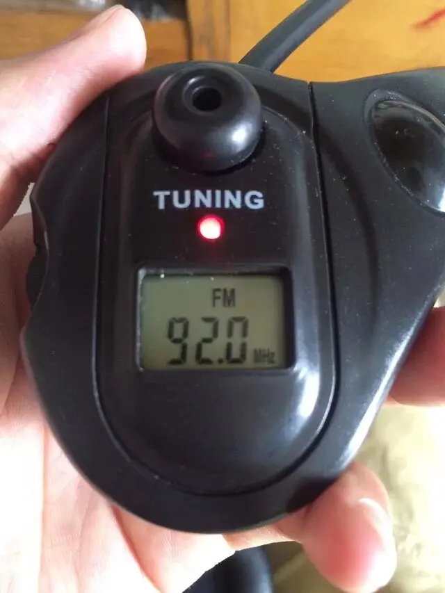👆调整到对应频率后的无线耳机。
2016.07 - 桌面级超声波雷达系统
技术关键词：51单片机 / 步进电机 / 超声波测距
项目简介：51单片机驱动超声波模块和步进电机，对不同方向进行进行测距并在APP上进行显示。
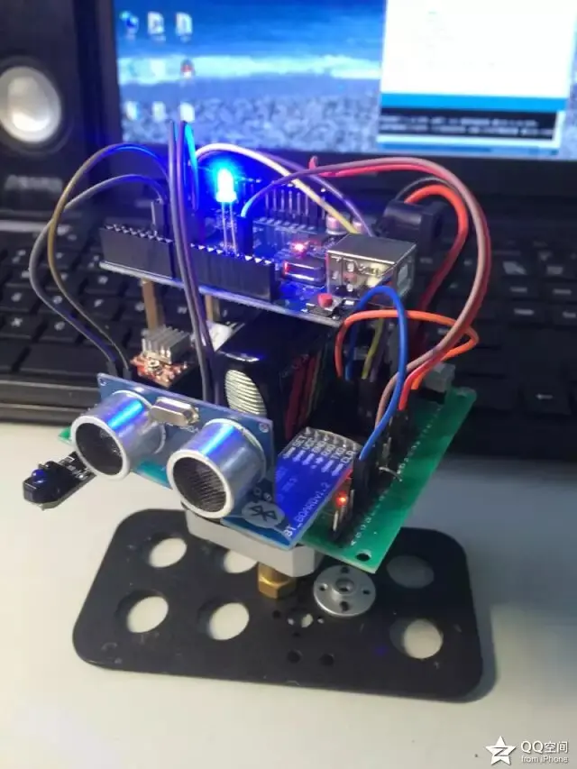👆搭建完成的桌面超声波雷达。
2016.08 ~ 2016.10 - 备战第八届山东省大学生科技节-山东省高校第五届机器人大赛
技术关键词：51单片机 / 机器人竞赛 / 智能避障避险机器人
项目简介：对于官方给出的场地，设计机器人从起点出发后按照逆时针的方向绕场地一周到达终点，在过程中保持机器人不掉下场地且不触碰场地中的障碍物，部分障碍物在比赛开始前才能确定位置。
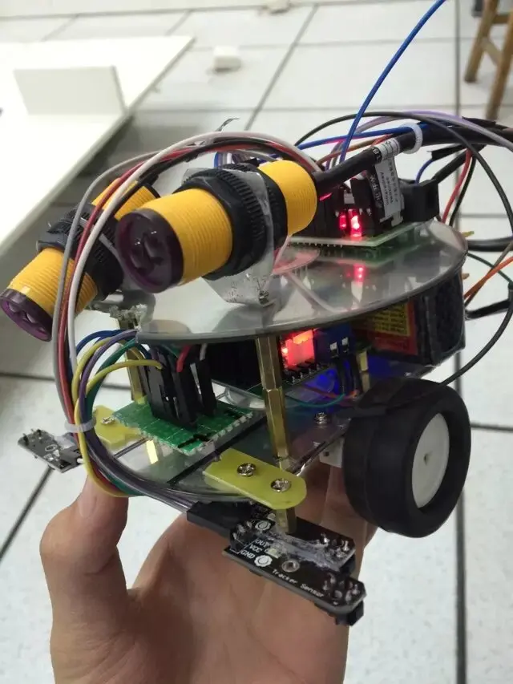👆基于红外传感器模块的避障机器人。
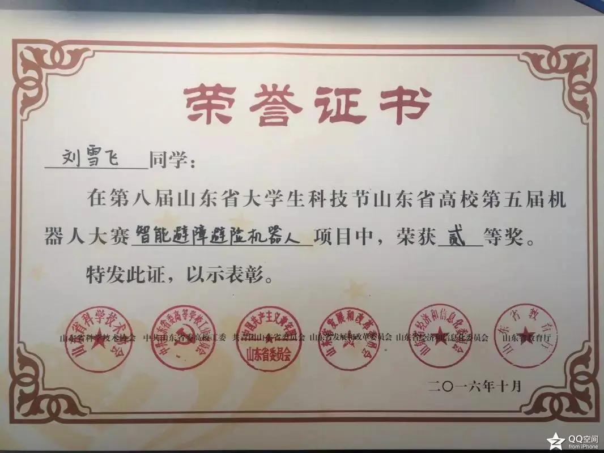👆作品获得智能避障避险机器人项目组的二等奖。
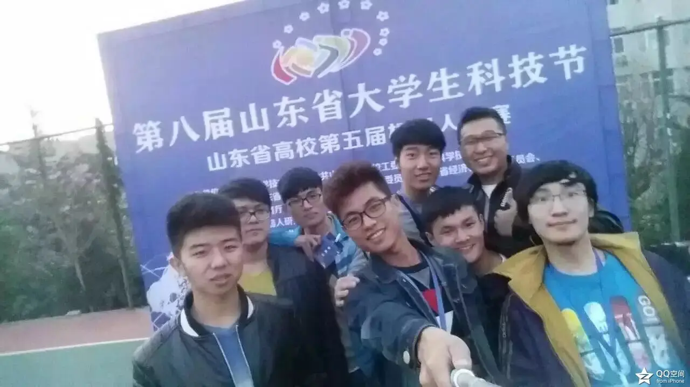👆共同参赛的机器人创新实验室的同学们。
2016.11 - 智能盆栽照顾系统
技术关键词：51单片机 / 步进电机 / 传感器
项目简介：通过湿度传感器检测盆栽是否需要浇水，然后一边旋转盆栽一遍实现浇水。当长时间干燥则通过蜂鸣器和红色LED进行报警。
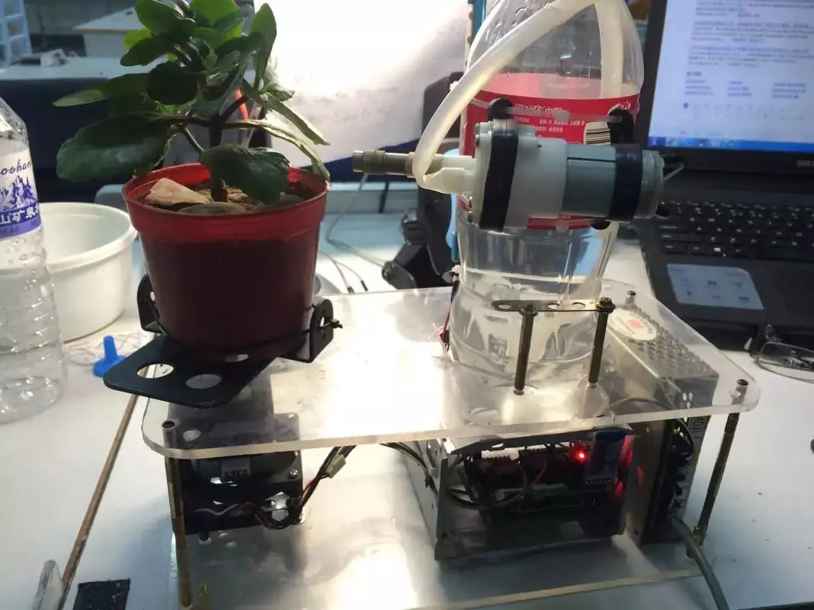👆正在照顾桌面盆栽的作品。
2017.04 - 桌面白板书写机器人
技术关键词：51单片机 / 步进电机 / 传感器
项目简介：通过计算把需要落笔的坐标转换为两个步进电机的角度，实现控制机械臂在白板上写字的功能。
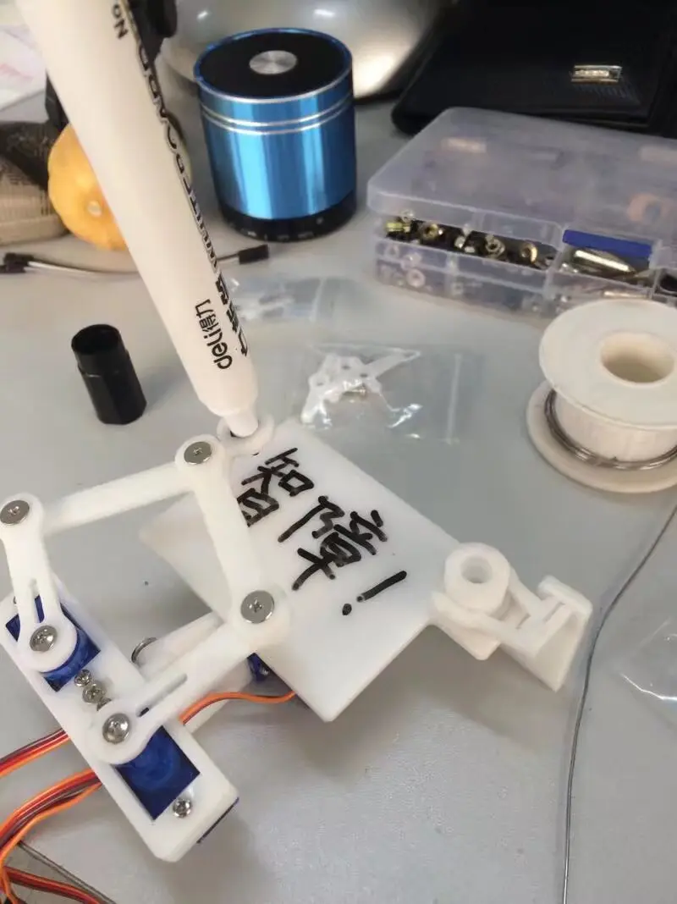👆正在白板上书写的机器人。